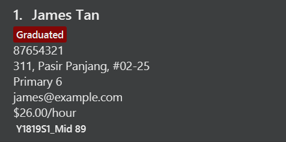
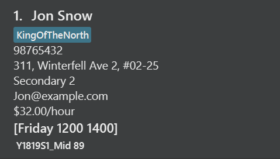

Overview
TutorPal is a desktop application used by private home tutors for managing student information. The useage is primarily through CLI. It is written in Java.
Summary of contributions
-
Major enhancement: implemented the promote feature to allow tutor to promote multiple students simultaneously.
-
What is does: Allow tutors to raise the educational grade of the students stored in TutorPal. Tutors can choose to promote all students or selectively.
-
Justification: This function is an efficient and yet flexible solution to swiftly increase the educational grade of students as a year passes. The decision to not automate the promotion of students is deliberate. This provides the users with a higher level of autonomy when using TutorPal.
In providing such feature instead of relying on promoting the students stored in TutorPal automatically, undesirable outcomes like promoting all students when the system time is changed to other years are avoided. As a private tutor, it is not uncommon to encounter parents who wish for their children to begin tuition lessons even before the start of an academic year. A situation like this is an example of why greater flexibility is more beneficial to a user, even if it means taking an additional step to manually promote the students in TutorPal.
-
-
Minor enhancement: implemented the earnings feature
-
What it does: Allows tutors to calculate the amount of money earned from giving tuition between a range of dates.
-
Justification: It is important to calculate and keep track of his/her income. This feature allows tutor to ensure that future earnings are sufficient, and also assist the tutor in planning and organizing current and future student intakes.
-
-
Code contributed: https://nus-cs2103-ay1819s1.github.io/cs2103-dashboard/#=undefined&search=chenlu-chua
-
Other contributions:
-
Project management:
-
Managed releases
v1.2-v1.4(3 releases) on GitHub -
Setting up of team repository.
-
Setting up of issue tracker.
-
Managed project Milestone.
-
-
Enhancements to existing features:
-
Updated the GUI of "Graduated" Tag to become more prominent to users.
-
Updated the add command to allow adding of educational level and grade.
-
Added an Education field to the person object in TutorPal to allow users to store the educational level of students.
-
Implemented tuition fees attribute to student. Tuition fees are based on student’s educational level and grade, irrespective of the subject(s) taught to them.
-
-
Documentation:
-
Removed obsolete AB4 information and updated relevant documents with TutorPal project.
-
-
Contributions to the User Guide
Given below are sections I contributed to the User Guide. They showcase my ability to write documentation targeting end-users. |
Promote students stored in TutorPal : promote
Promotes educational grade of the selected student(s)
Format: promote [INDEX]…
-
Promotes the educational grade of the students specified by their index.
-
There can be more than one INDEX provided.
|
Multiple indexes should be separated by a space. |
Format: promote all
-
Promotes all students stored in TutorPal, including those who are not displayed on the panel.
Examples
-
promote 1 2 4 12
Promotes the first, second, fourth and twelfth student. -
promote all
Promotes all students in TutorPal.
Retrieving earnings
Retrieve the total earnings from tuition fees from all students between a range of date in the current year.
Format: earnings START_DATE END_DATE
-
START_DATEandEND_DATEshould be given in the format of DDMM. -
The beginning and ending dates are included in the calculation of tuition fees.
-
The year field is not required as TutorPal assumes current calender year by default.
-
To calculate the amount of money earned within a day, input the same
START_DATEandEND_DATE. -
Graduated students and students without tuition time slot(s) are ignored by the earnings function.
-
Due to the lack of built-in attendance taking capability in TutorPal, the earnings function:
-
Follows a standard one lesson per week schedule and does not account for cancelled or ad-hoc lessons.
-
Should only be used to calculate tuition fees that will be earned in the future.
-
Does not account for the tuition fees of graduated students.
-
|
While the use of earnings command for dates before the current date is not prohibited, it is not encouraged as the values calculated will be inaccurate if tutorPal contains either graduated students and/or students whom had their time slot(s) changed before. |
Example:
-
earnings 0204 2506
This command returns the total amount of tuition fees earned between 2 April 2018 to 25 June 2018 inclusive. A warning message will be displayed to remind the user on the useage of past dates. -
earnings 1212 1212
This command will return the total amount of tuition fees to be earned on 12 December.
Contributions to the Developer Guide
Given below are sections I contributed to the Developer Guide. They showcase my ability to write technical documentation and the technical depth of my contributions to the project. |
Promote Feature
Current Implementation
The promote feature has been implemented to allow users to manually promote his/her students to the next educational grade. The promote command can either promote all students stored in TutorPal, or selectively through the index of students.
-
PromoteCommandParserparses the arguments to determine which command to be returned. -
The former is facilitated by the
PromoteAllCommand. -
The latter is facilitated by the
PromoteIndividualCommand -
Both command classes are subclasses of
PromoteCommand. -
Both subclasses inherit the
PromoteCommand#createPromotedPerson()andPromoteCommand#getNumberOfGraduatedStudents()methods and implements their own overriddenexecute()function. -
As the promote feature do not promote students across educational levels (e.g. Primary to Secondary), a "Graduated" tag is assigned to a student if the promote function is called on a student who is in his/her final year.

Future Implementation
Implement a function to allow automated promotion of all students in TutorPal at the beginning of the year and allow users to configure TutorPal the promote feature to be automatic or manual.
Design considerations
Aspect: Promote feature to be automated by time or by manual user input
-
Alternative 1 (current choice): Manual user input
-
Pros:
-
Easier to implement.
-
Prevent undesired situations like promoting all students if system time is set to a new year unintentionally.
-
Provides tutors with higher autonomy in editing student information (e.g. if students retain).
-
-
Cons:
-
Some users may prefer automatic promotion.
-
-
-
Alternative 2: Automatic promotion
-
Pros:
-
Convenient for users (subjective).
-
-
Cons:
-
Undesirable side effects like unintended promotion of student if system time is changed.
-
-
Earnings Feature
Current Implementation
The earnings feature has been implemented to retrieve the sum of tuition fees earned from all students
between a period of time. A Fee class has been added to the list of attributes of Person class.
-
The earnings command accepts two arguments, the first being the beginning date followed by the ending date. The total tuition fees earned between the range of dates will be displayed.
-
Each student’s educational level and tuition fee per hour are also displayed on the PersonCard GUI. The tuition fee of an individual student is determined by his or her educational level and grade.
 -
The earnings command word and two arguments which contains a start and end date are taken as an input into the
AddressBookParserclass. AnEarningsCommandobject is returned, which executes and displays the calculated sum of tuition fees earned between a range of dates.
The earnings command uses the information in UniquePersonList from VersionedAddressBook to obtain the fees information
of every student contained in the AddressBook. Using the list of students, EarningsCommand then uses the
Java 8 Stream API to calculate and return the total amount of tuition fees earned within the period provided by
the user.
The following sequence diagram shows how the earnings function works:
Future Implementation
-
Implement an option to allow tutors to assign tuition fees to students rather than fixing it based on the market rate of student’s educational level and grade.
-
To be able to calculate past earnings, taking into account that certain students may have changed their tuition time slots.
-
Calculate tuition earnings based on attendance, including extra lessons.
Design considerations
Aspect: The type of arguments acceptable
-
Alternative 1 (current choice): Accepts a range of date in ddmm format.
-
Pros:
-
Gives users a less restrictive option to calculate tuition fees earned.
-
-
Cons:
-
Harder to implement.
-
-
-
Alternative 2: Accept a single argument of any month.
-
Pros:
-
Easier to implement.
-
Allow accurate retrieval of past earnings in the event that a student’s time slot changed as monthly earnings can be calculated and stored.
-
-
Cons:
-
Users are restricted to obtaining fees earned only in period of months.
-
-